Tulum is the most polarizing beach destination in the Americas. Half of Reddit thinks it's an overpriced Instagram set. The other half says it's genuinely magical — if you know where to go and what to skip.
The truth is somewhere in between. The hotel zone beach clubs charge NYC prices for drinks, sargassum seaweed is a real issue half the year, and some of the "bohemian chic" spots are about as authentic as a Spirit Airlines "luxury" seat. But the best clubs — the ones locals and repeat visitors recommend — deliver something you genuinely can't get anywhere else.
📊 How we built this list
We analyzed 200+ Reddit posts and 700+ comments across r/tulum, r/rivieramaya, r/mexico, and r/travel — spanning 2022 to 2025. Beach clubs were ranked by recommendation frequency and weighted against negative mentions (overpriced, rude service, seaweed issues).
💰 $50–$100+ min spend
📍 South end of hotel zone
🕐 11:00 AM–late
📌 Google Maps →
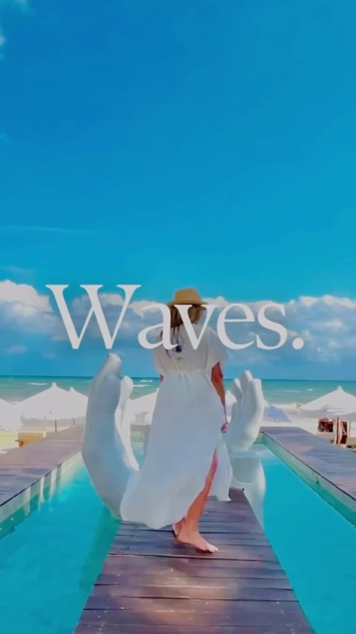
The vibe: The best party beach club in Tulum. Live DJs, fire dancers at sunset, and a crowd that's there to have fun. Saturday afternoon is legendary. The cocktails are actually good (rare for Tulum). The food is above average for a beach club. Minimum spend applies but you'll hit it naturally.
"Vagalume on a Saturday afternoon is the quintessential Tulum experience. DJ, fire dancers at sunset, great cocktails, beautiful people. Yes it's expensive but it's genuinely a great time."
— r/tulum · 34 upvotes
"If you only do ONE beach club in Tulum, make it Vagalume. It's the one that actually lives up to the hype."
— r/rivieramaya · 21 upvotes
tabiji verdict: The one beach club that consistently delivers on the Tulum promise. Saturday is the main event but weekdays are great too (less crowded, same vibe). Book a table for sunset or arrive by 1 PM to claim a good spot.
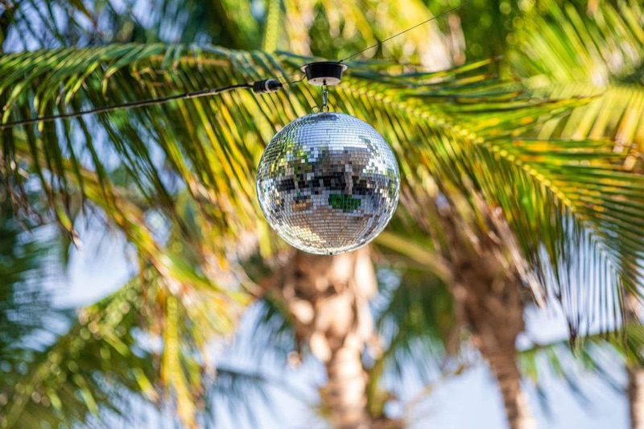
The vibe: Former mansion of Pablo Escobar (allegedly), now an art-filled luxury hotel with a gorgeous beach club. Original Banksy and Kaws pieces on the walls. The pool area is stunning. Food is excellent. This is where the "I don't just want a beach, I want an experience" crowd goes.
"Casa Malca is the most beautiful property in Tulum. Real art on the walls, the pool is gorgeous, and the beach section is kept cleaner than most. Worth the splurge."
— r/tulum · 27 upvotes
tabiji verdict: The luxury art-gallery-meets-beach-club pick. If you appreciate design and art, Casa Malca is head and shoulders above the rest. The alleged Escobar connection is fun trivia. Worth it for a special day.
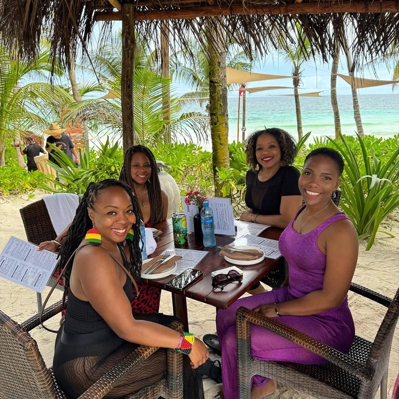
The vibe: The best food of any Tulum beach club, period. Mediterranean-Mexican fusion that would hold up as a standalone restaurant. More chill and sophisticated than the party clubs. The cocktails are excellent. Perfect for a long lunch that turns into an afternoon.
"Ziggy's has the best food of any beach club in Tulum. The ceviche and grilled octopus are genuinely restaurant-quality. Chill vibe too — no obnoxious DJ."
— r/tulum · 31 upvotes
"If you care more about food than party, Ziggy's is your spot. We went three times in a week."
— r/mexico · 16 upvotes
tabiji verdict: The foodie's beach club. Skip the party and come here for a long, lazy lunch with your feet in the sand. The food alone justifies the minimum spend. Perfect for couples.
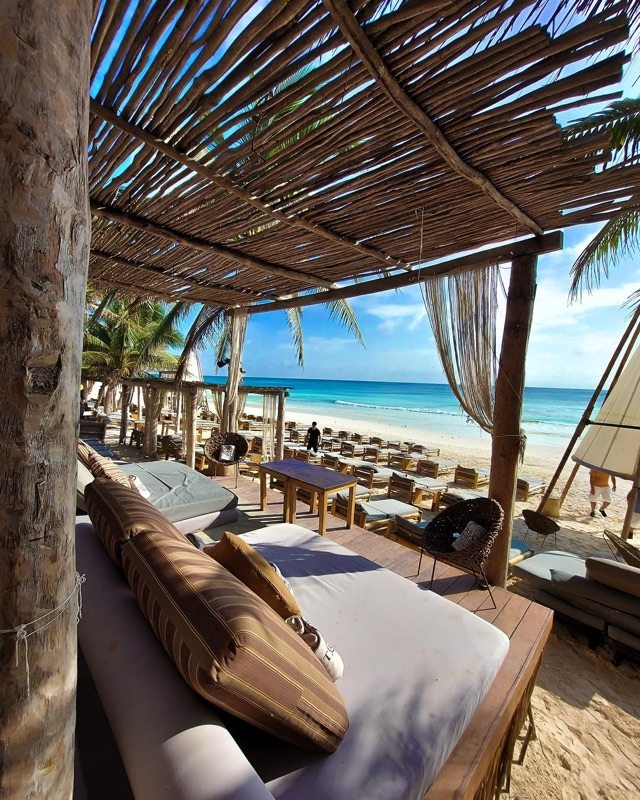
The vibe: The "big production" Tulum experience. Fire shows, dancers, theatrical food presentations (yes, they set things on fire at your table). It's Mykonos energy transplanted to the Caribbean. Controversial on Reddit — some love the spectacle, others find it obnoxious. Undeniably the most "extra" option on this list.
"Taboo is the most polarizing place in Tulum. If you like bottle-service-nightclub energy on a beach, you'll love it. If you want chill vibes, run away."
— r/tulum · 22 upvotes
tabiji verdict: The spectacle pick. You'll either love the theatrical energy or find it exhausting. If you've been to Mykonos and enjoyed it, this is your spot. If you came to Tulum for bohemian chill, skip Taboo entirely.
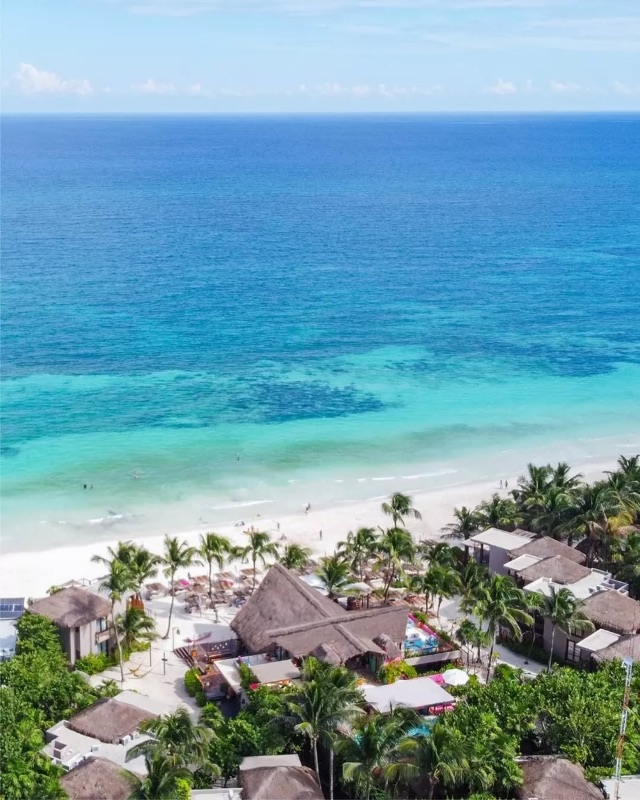
The vibe: The Saturday salsa night is Tulum's best-kept secret — live music, dancing on the sand, mezcal flowing. Daytime it's a laid-back hotel beach club with great tacos and a chill pool. More affordable than most hotel zone clubs. Sunday brunch is popular.
"La Zebra Saturday salsa night is the most fun you can have in Tulum without spending a fortune. Live music, dancing on the beach, and the mezcal cocktails are incredible."
— r/tulum · 38 upvotes
tabiji verdict: The best value in the hotel zone. Saturday salsa night is unmissable — arrive by 8 PM for a good spot. Daytime is relaxed and the tacos are legit. The most "real Mexico" you'll feel in Tulum's beach zone.
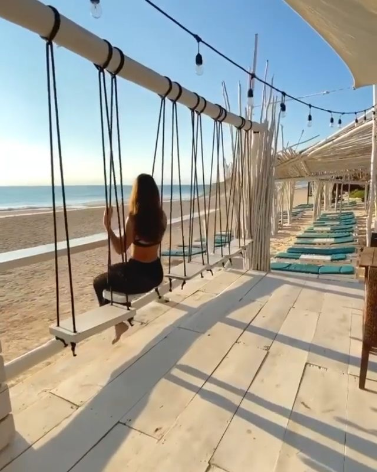
The vibe: The most photogenic spot in Tulum — the swing-over-the-pool shot is all over Instagram. Beyond the photo ops, it's a genuinely nice, mid-priced beach club with good cocktails and a relaxed atmosphere. Less pretentious than the south-end clubs.
"Coco Tulum is where you go for the Instagram swing photo and honestly that's fine. It's also just a nice, chill beach club that doesn't try too hard."
— r/tulum · 18 upvotes
tabiji verdict: Get the photo, stay for the vibes. One of the more affordable hotel zone options with genuinely relaxed energy. Don't overthink it — sometimes you just want a swing over a pool and a cold margarita.
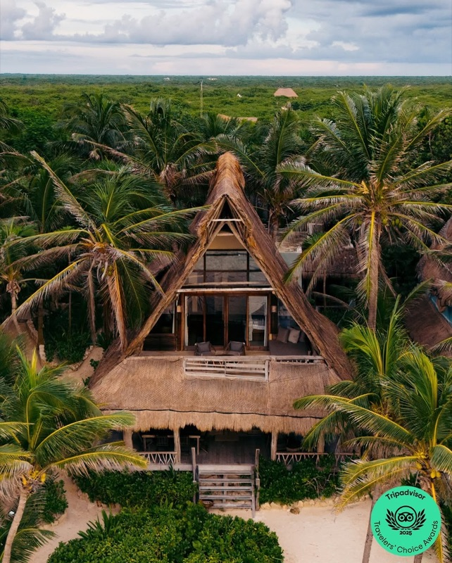
The vibe: Home to the famous "Ven a la Luz" sculpture — the giant wooden arch/portal that's become Tulum's unofficial symbol. Beyond the photo op, it's a solid mid-range beach club with good food and a spiritual-bohemian atmosphere. Yoga sessions, sound healing, full moon parties.
"Ahau is the OG Tulum vibe — the sculpture, the yoga, the jungle-meets-beach feel. It's touristy now but it still captures what made Tulum special in the first place."
— r/tulum · 25 upvotes
tabiji verdict: See the sculpture, stay for the vibe. Ahau represents what Tulum was before it went fully commercial — spiritual, artistic, beach-bohemian. The full moon parties are worth timing your trip around.
💰 $30–$60 min spend (party nights: $50+)
📍 South hotel zone
🕐 10:00 AM–late (party nights)
📌 Google Maps →
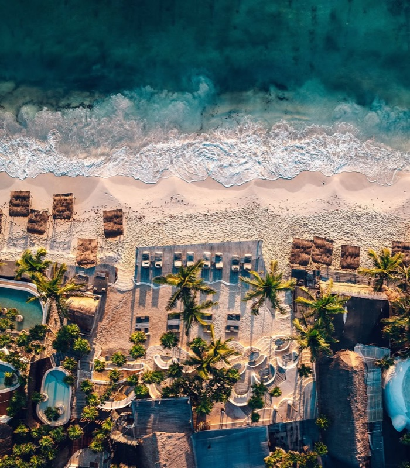
The vibe: Daytime: chill beach club with hammocks and good food. Night: one of Tulum's best party venues with international DJs and full moon events. The Saturday night party is legendary. The property is huge, so it never feels too packed. Bring cash for the cover.
"Papaya Playa Saturday night party is the best nightlife experience in Tulum. International DJs, open-air dance floor on the beach, and the crowd is amazing."
— r/tulum · 29 upvotes
tabiji verdict: The dual-personality club: chill by day, party by night. If you want both Tulum experiences, Papaya Playa delivers. Saturday night is the main event. Daytime is a legit relaxing beach day.
💰 $60–$100+ min spend
📍 North hotel zone
🕐 10:00 AM–7:00 PM
📌 Google Maps →

The vibe: Luxury hotel beach club open to non-guests. Impeccable service, pristine beach maintenance, beautiful pool area. The most "resort" feeling in Tulum's hotel zone. Expensive but the level of comfort and service justifies it if that's what you want.
"Be Tulum is pricey but it's the only beach club where the service matched the price. Immaculate beach, attentive staff, great cocktails. If you want luxury, this is it."
— r/travel · 14 upvotes
tabiji verdict: The true luxury pick. When you want beach club service that matches the Tulum price tag. Not the place for budget travelers — but if you're willing to spend, you'll actually feel pampered here.
💰 $20–$40 min spend
📍 North end of hotel zone
🕐 9:00 AM–6:00 PM
📌 Google Maps →
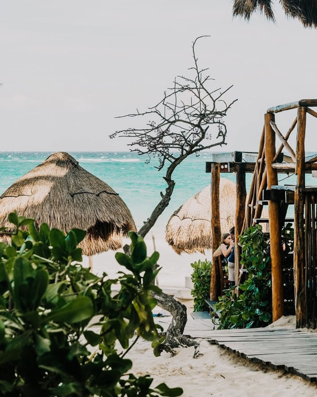
The vibe: Quiet, unpretentious beach club on one of the wider, cleaner stretches of sand. No DJ, no scene — just beach, hammocks, and good Mexican food. Popular with families and couples who want to actually relax. The guacamole is made tableside.
"Rosa del Viento was our escape from the Tulum scene. No music, no influencers, just beach and hammocks. The guacamole was the best we had in Mexico."
— r/tulum · 20 upvotes
tabiji verdict: The anti-Tulum Tulum beach club. For people who came for the Caribbean, not the scene. Genuinely relaxing, great food, no pretension. The beach here is wider and cleaner than the south end.
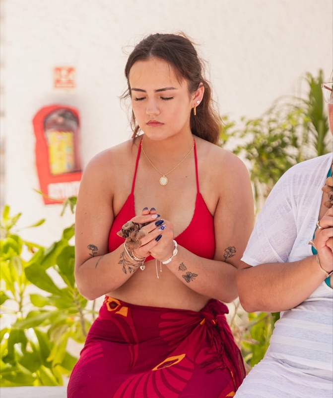
The vibe: Restaurant-first beach club with excellent Italian-Mexican fusion. The architecture is beautiful — organic wood structures blending into the jungle. Less about partying, more about long lunches. The pasta is surprisingly excellent. Good wine list for Tulum.
"Mia has the second-best food in the hotel zone after Ziggy's. The pasta was genuinely amazing. Go for lunch — the setting is beautiful."
— r/tulum · 15 upvotes
tabiji verdict: The lunch destination. Great food in a gorgeous setting without the party pressure. If Ziggy's is full, Mia is the move. The architecture alone is worth seeing.
The vibe: The most affordable beach club in the hotel zone. No frills, but the beach is good, the drinks are cheap (by Tulum standards), and there's no pressure to spend big. Popular with backpackers and budget travelers who want beach access without the usual Tulum markup.
"Hip Hotel is the budget pick. Cheapest beach access in the hotel zone, no minimum spend, and the beer is actually reasonably priced. Saved this for our chill days."
— r/tulum · 24 upvotes
tabiji verdict: The backpacker's friend. When you want hotel zone beach access without hotel zone prices. Not fancy, not trying to be — just a good beach day at a fair price.
💰 Free (vendors: $2–$5)
📍 Near Tulum ruins, north end
🕐 All day
📌 Google Maps →

The vibe: The public beach near the ruins. Free access, beach vendors sell cold beer and snacks for a fraction of beach club prices. The water is stunning — turquoise Caribbean at its finest. Bring your own towel and snorkel. More seaweed than the maintained clubs, but you're trading that for freedom and zero minimum spends.
"Playa Paraiso is the most beautiful beach in Tulum and it's FREE. Why are people paying $100 at beach clubs? Bring a towel, buy a $3 beer from a vendor, done."
— r/mexico · 56 upvotes
"Anyone telling you Tulum is 'expensive' hasn't been to Playa Paraiso. It's a world-class beach and it costs nothing."
— r/travel · 33 upvotes
tabiji verdict: The reality check. This is the most beautiful beach in Tulum and it's completely free. Do one or two beach clubs for the experience, but spend your other beach days here. The water is the same Caribbean turquoise — you're just not paying $15 for a margarita.
💰 $40–$70 per person (dinner)
📍 Tulum road (jungle side)
🕐 6:00 PM–12:00 AM
📌 Google Maps →
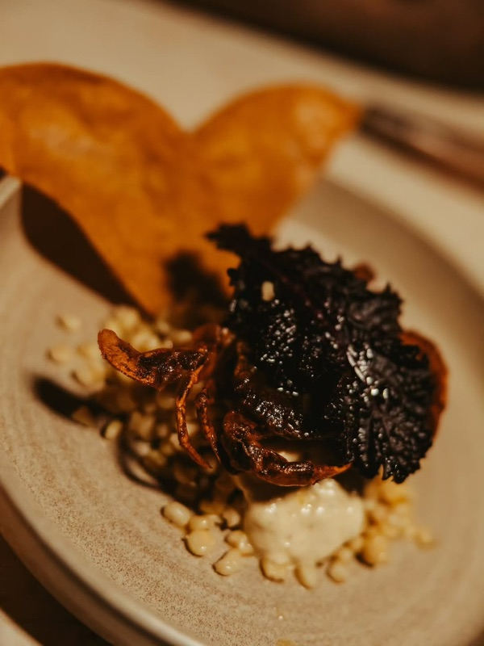
The vibe: Not a beach club — a jungle restaurant with a dance floor. But it's essential Tulum nightlife. Open-air dining under the trees, fire pit, mezcal cocktails, and a DJ playing deep house after dinner. The food is excellent (especially the tuna tostadas). Thursday and Saturday nights are the biggest.
"Casa Jaguar is the best restaurant-nightlife combo in Tulum. Amazing food, then the tables get pushed back and it turns into a jungle dance party. Magic."
— r/tulum · 41 upvotes
tabiji verdict: The jungle nightlife experience. Not a beach club but too essential to omit. Dinner + dancing under the trees is peak Tulum. Book a reservation or arrive early — it fills up fast.
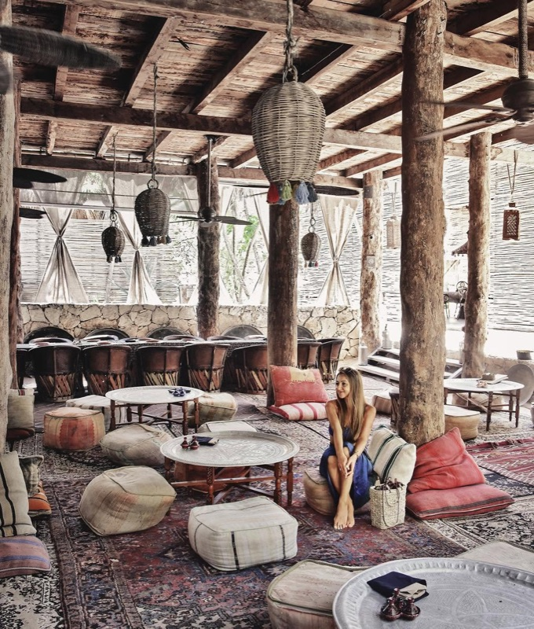
The vibe: Spiritual-luxury beach club — think sound baths, temazcal ceremonies, and wellness experiences alongside excellent cocktails. The design is jaw-dropping (giant wooden teepee structure). More refined and intentional than the party clubs. Popular with the wellness crowd.
"Nomade is the most beautiful hotel/beach club in Tulum. The giant wooden structure is incredible, the wellness offerings are legit, and the beach is gorgeous."
— r/tulum · 19 upvotes
tabiji verdict: The spiritual-luxury pick. If you came to Tulum for wellness + beach, Nomade is the one. The architecture alone is worth seeing. More meaningful than the party clubs, more polished than the budget options.
Frequently Asked Questions
How much does a day at a Tulum beach club cost?
Minimum spends range from $15–$100+ USD per person. Cocktails: $12–$20. Food: $15–$35/plate. Budget option: Playa Paraiso public beach is free with $2–$3 vendor beers. The hotel zone is significantly pricier than Cancún or Playa del Carmen.
Is Tulum overpriced or worth it?
Reddit is deeply divided. The "overpriced" camp cites Mykonos prices for mediocre service. The "worth it" camp says the vibe is genuinely unique. Truth: it depends on which clubs you pick. The ones on this list deliver. Visit November or April for good weather with fewer crowds and lower prices.
What about the sargassum seaweed?
It's a real issue May–September (peak June–August). Beach clubs maintain their stretches, so they're cleaner than public beaches. January–April is the cleanest season. Check r/tulum for current conditions before your trip.
When is the best time to visit Tulum?
Sweet spot: November or April (good weather, fewer crowds, lower prices). Peak/most expensive: December–March. Avoid June–August for seaweed. Best days: Tuesday–Thursday (least crowded). Saturday is party day at most clubs.